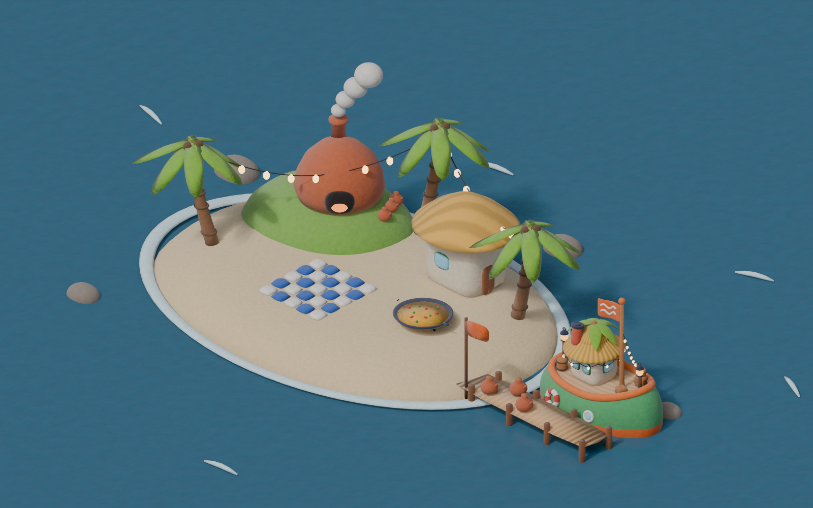

Cala del Alfar, el mundo del barco de arcilla
El barco que convierte una cala en fiesta: cocina de día, luces de noche.

Render en Blender con el mismo material, luz y cámara isométrica del barco B05. La isla, los nombres y la historia son una propuesta para pensar; los aprueba Álvaro.
Los lugares
- El barco atracadoSu casa es un chiringuito flotante: techo de paja, palmera y guirnalda.
- Embarcadero de los botijosLos botijos recién cocidos esperan para viajar a las islas de eventos.
- Chiringuito de pajaLa barra en tierra firme, hermana del techo del barco.
- La paella del mediodíaDe día, la cala cocina. Lo primero que huele quien llega.
- Horno de alfareroDonde se coció el barco. Todavía humea.
- Pista de azulejosDe noche, la cala baila.
- Guirnalda entre palmerasLa misma guirnalda que el barco lleva de isla en isla.
El barco
Nombre, a elegir:
«Churro» es como el script llama a su regala de plastilina.
Carácter. Es el anfitrión: llega el primero, cuelga la guirnalda, enciende el fuego de la paella y se va el último. Blandito, un poco torcido y lleno de huellas de dedos, porque está hecho a mano y no pretende ser perfecto.
Su historia. Lo modelaron en la cala para llevar botijos de agua fresca a las fiestas. Salió del horno con la panza redonda y demasiado alegre para ser un barco de carga. Así que dejó los botijos en el muelle y empezó a cargar la fiesta: paja, palmera y bombillas. Desde entonces, cuando aparece por el horizonte, en la isla ya saben que va a haber arroz a mediodía y baile por la noche.
Por qué encaja con BOIA
- Más que música (§37.3). La filosofía nombra la paella de día, la artesanía y las pequeñas marcas. La cala es exactamente eso: horno, botijos, cocina y pista.
- All Day BOIA (§37.8). Un evento que cambia con las horas. La cala tiene dos caras, la del mediodía y la de la noche.
- Hecho a mano, desde Alicante. Palmeras, arroz y barro. La tradición alfarera de la provincia, con los botijos de Agost, podría ser la referencia real. Falta que la confirme Álvaro.
- Dar espacio (§37.2). El barco no es la estrella: prepara el sitio para que pasen cosas.
Cómo viviría en el juego
Todo con comportamientos que el motor ya tiene en el catálogo (§48): ninguna mecánica nueva.
Paleta del mundo
Arriba, los colores del barco (del script 05_arcilla_maqueta.py). Abajo, los que añade la cala (propuesta, en tools/barcos/mundos/b05_cala.py).
Qué hay que decidir
- El nombre del barco y el de la cala.
- Si cada barco tiene su isla propia en el mapa o un puerto base en una isla compartida.
- Dónde se cuenta la historia: en Mi Barco, en su diálogo o en ambos.
- Si la referencia a Agost y a la alfarería alicantina se usa o se queda en inspiración.
Se regenera en unos 18 s con /Applications/Blender.app/Contents/MacOS/Blender -b -P tools/barcos/mundos/b05_cala.py.